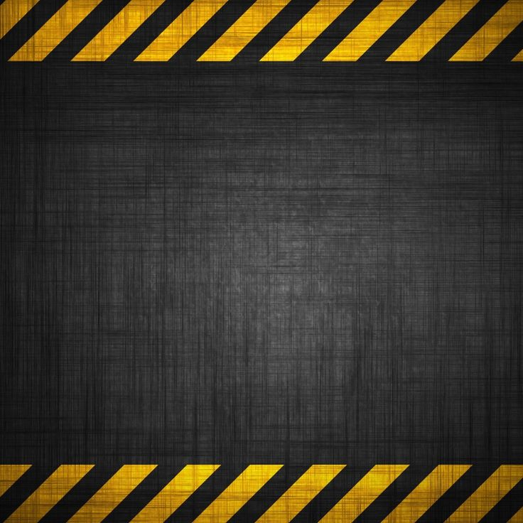
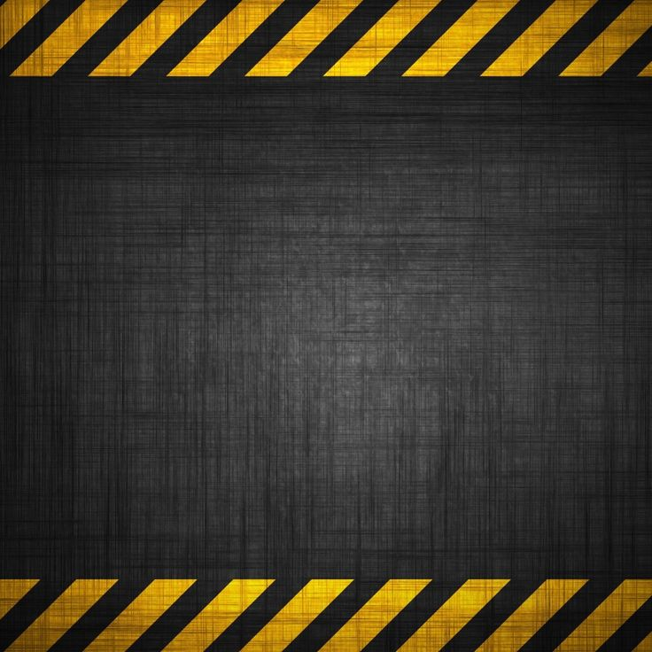

О спорте и О бокс
Спорт — слово знакомое всем и каждому. Спортом заниматься — жить и улыбаться. Кто любит спорт, тот здоров и всегда бодр. Спорт, воздух и вода — наши верные друзья. Холода вам не страшны, если со спортом вы дружны. Все эти пословицы про спорт, который и вправду помогает нам в жизни. Он закаляет тело, укрепляет не только иммунитет, но и мышцы.
Подробнее о Боксе нажмите сюда 
